企业内训策划案——大模型微调一日实训¶
A0 大模型技术演进及工程科研应用¶
本次课程将简要阐述人工智能技术演进里程碑事件，系统梳理大模型技术从学术探索到产业落地的关键进程，结合国际前沿最新研究成果，深入剖析AI4S以及工程场景中的创新应用。通过典型案例揭示大模型技术如何驱动科研范式变革与工程效率提升，探讨技术瓶颈与未来趋势，为企业智能化转型提供战略参考与实践路径。
1 大模型技术演进（以openai为例）¶
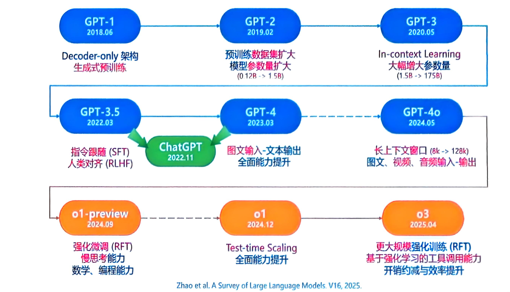
2017年，Google引入Transformer模型。
2018.06，发布GPT-1。 （GPT: Generative Pre-Training）
- GPT1 为 GPT 系列模型建立了核心架构
- 仅解码器的 Transformer 架构
- 建立了对自然语言文本进行建模的底层原理，即预测下一个单词
- GPT: 生成式预训练
2019.02，发布GPT-2。 认为每个 （NLP） 任务都可以被视为基于世界文本子集的单词预测问题。因此，如果无监督语言建模经过训练，具有足够的能力来恢复世界文本，则能够解决各种任务。（效果仍然较差）
- 用一个大型网页数据集WebText进行训练
- 将参数规模从0.12B提高到1.5B
2020.05，发布GPT-3。 经验证明，将神经网络扩展到相当大的规模可以导致模型容量的巨大增加。
- 探索了scaling law，大幅增加参数量，从1.5B提升到175B
- 正式引入In-context Learning（GPT-2已采用） ，LLM 的预训练和利用收敛到相同的语言建模范式
2022.03，发布GPT-3.5。
- 在代码数据训练，提升代码能力和思维链能力
- 对GPT-3采用与 InstructGPT 类似的三阶段强人类反馈化学习（RLHF）算法
- 收集示范数据SFT，然后迭代进行：（1）用策略模型收集比较数据（比生成式易获取），训练奖励模型RM，从而可用于打分（2）使用2017年提出的PPO（近段策略优化）对策略模型强化学习
- SFT提高指令跟随能力，强化学习缓解有害有毒回答
- 上下文长度为4k
InstructGPT的三阶段强人类反馈化学习（RLHF）算法：《Training language models to follow instructions with human feedback》
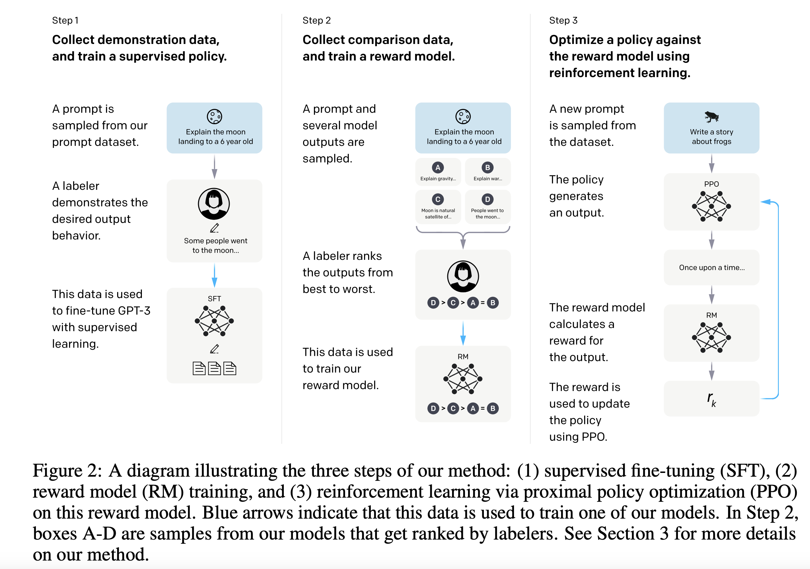
2023.03，发布GPT-4（ChatGPT = GPT-3.5/GPT-4 + 交互式网页）。
- 进一步探索scaling law，从175B提升到1.76T
- 在解决复杂任务方面的能力比 GPT-3.5 更强
- 构建了scaling law的预测方式，从小模型预测大模型的loss
- 将文本输入扩展到图像/文本信号（详情可见后续2023.09发布的GPT-4V）
- 上下文长度拓展至8k（GPT-4-32k支持32k）
- 2023.11发布的GPT-4 Turbo拓展到128k
- 强化学习时引入额外的安全奖励信号，进一步减少有害输出
2024.05，发布GPT-4o(omni) 。 GPT‑4o 是一种自回归全模态模型（参数规模200B），它能够接受文本、音频、图像和视频的任意组合作为输入，并生成文本、音频和图像输出的任意组合。
- 自回归全模态模型，音频输入响应接近人类响应时延（平均320ms）
- 关键数据集（公开数据+数据合作伙伴）：
- 公开网页数据，视角多样
- 代码与数学数据，有助于结构化逻辑和推理，利于问题解决
- 多模态数据（图像、音频和视频），训练 LLM 如何解读输入的非文本内容并生成非文本输出
2024.12，发布OpenAI o1模型（2024.09发布o1-preview）。 发现Test-time Scaling，随着强化学习（训练时间计算）和思考时间（测试时间计算）的增加，o1 的性能也在不断提高。（参数规模300B）
- 通过强化微调（RFT），o1 可以学会磨练自己的思维链，并完善自己使用的策略。
2025.02，发布GPT-4.5 扩大无监督学习的规模，得到更强的可控性、用户意图执行能力和更高的“情商”。
- 为 GPT‑4.5 开发了可扩展的新技术，能够利用从较小模型提取的数据来训练规模更大、功能更强的模型
2025.04，发布GPT-4.1 上下文长度达到1 million，相比4o提升了编码能力、指令遵循能力、多模态长上下文能力。
2025.04，发布OpenAI o3。 观察到大规模强化学习展现出了与 GPT 系列预训练相同的“计算量增加 = 性能提升”的趋势。
- 更大规模强化微调（提高一个数量级），并通过强化学习训练工具调用，提升编码、数学、科学
- 首次能够基于图像进行思考，在视觉感知任务中表现出了最佳性能
2025.08，发布GPT-5。 参数规模从GPT-4的1.8T提升到52T，并且建立了统一系统，包含GPT-5-main（前身GPT‑4o）、GPT‑5 Thinking（前身OpenAI o3）和实时路由器。
- 统一系统：路由+推理/非推理
- 在减少幻觉、提升指令遵循能力以及减少阿谀奉承方面取得了显著进展
- 常用场景提升性能（写作、编程和医疗）
2 大模型的科研工程应用¶
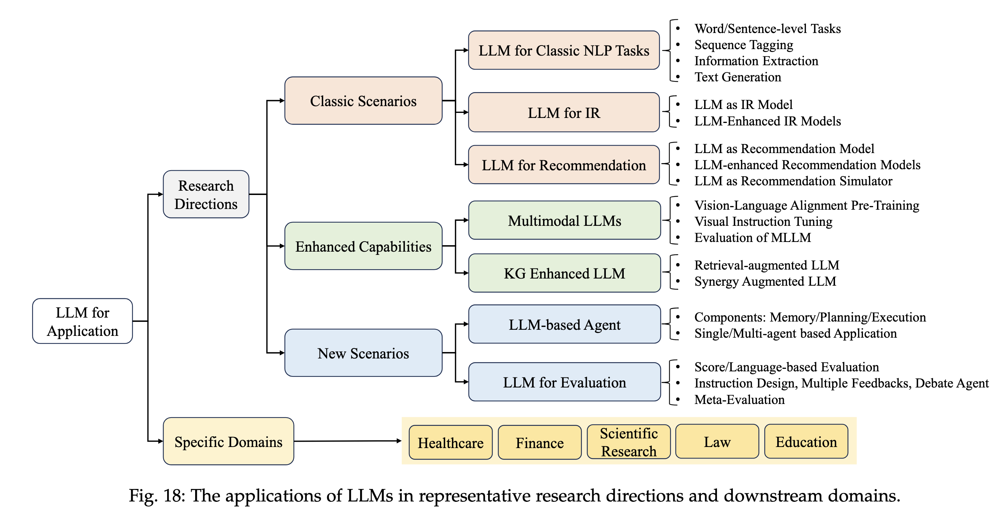
《A Survey of Large Language Models》
- 一句话把握: 大模型像“通才顾问”，小模型像“专科医生”。通才适配多任务、交互自然；专科在特定任务上小而精、省成本。实际落地常是“两者协作+工具配套”。
2.1 面向研究共同体¶
2.1.1 经典NLP任务（语言理解与生成的“基本功”）¶
词/句级任务（相似度、情感）
- 怎么做: 识别“这两句话像不像”“评论是好评还是差评”。
- 实际表现: 小模型用标注数据“专门练”通常更省钱且强；大模型用少量示例快速上手，优势在“通用与省配置”。
- 适用建议: 有数据、有固定任务→小模型；任务多变、样本很少→大模型。
序列标注（NER、POS）
- 怎么做: 给每个词贴标签，如“人名/地名/机构名”。
- 难点: 少见类别、名字模糊时，大模型容易理解偏差。
- 改进思路: 提示里把类别含义讲清楚、给足示例，或让小模型做最后一层“严格判定”。
信息抽取（关系/事件）
- 怎么做: 从句子中抽“谁与谁是什么关系”“发生了什么事”。
- 难点: 一句话多层关系、跨句信息，纯靠大模型少样本容易漏掉或混淆。
- 常用做法: 两步走（先粗抽再精炼），或“大模型提建议+小模型做精确判断”。
文本生成（翻译、摘要）
- 优势: 大模型按提示生成流畅文本，能处理“文档级翻译”“带交互的摘要”。
- 短板: 低资源语言/小众领域，因训练数据少，质量不稳。
- 应对: 准备术语表/风格示例，必要时加入检索或后校对。
选型总则
- 看三件事: 数据量（是否足够专门训练）、任务多变度（是否常变换目标）、成本要求（训练/推理花费）。
- 稳妥组合: “大模型做理解与生成框架+小模型做精细判定与效率收口”。
2.1.2 信息检索（搜索升级）¶
- 大模型当“重排员”: 给它一小批候选文档，按相关度排序。
- 优点: 不用训练，写好指令就能用（逐个打分、两两比较或一组排序都可）。
- 代价: 算力开销不小，长文档列表容易吃力。
- 大模型增强传统检索
- 数据增强: 自动标注“相关/不相关”、为文档生成典型查询，训练出更懂用户意图的检索器。
- 查询改写: 把“含糊问题”改成系统更好懂的表达，或补充背景知识。
- 文档扩展: 用“可能被搜索到的问法”丰富文档侧，让匹配更准。
- 落地建议: 高频、长文本场景优先用“增强检索”；重点问题页再用“大模型重排”兜底，兼顾体验与成本。
2.1.3 推荐系统（“猜你想要”）¶
- 直接用大模型做推荐
- 方式: 用提示或指令微调，让它读历史点击“推下一个”；给物品/用户配“语义ID”，让协同关系可读。
- 现实: 零/少样本往往不如传统ID推荐稳定；指令微调更好但成本高。
- 大模型帮传统推荐变强
- 意图推断: 总结用户兴趣变化，辅助召回更准。
- 特征编码: 读商品文案、用户评价，产出更有信息的向量特征。
- 知识“蒸馏”: 训练时对齐“小模型的隐藏表征”到“大模型风格”，上线只用小模型，既快又省。
- 推荐模拟器（Agent）
- 作用: 模拟“不同画像的用户”与“不同风格的商品”，反复交互，评估策略在“像真实世界”的环境里是否靠谱。
- 实操要点: 线上以小模型为主，前台延迟敏感；大模型用于离线增强与实验验证。
2.1.4 多模态大模型（看图又能说）¶
- 它如何工作: 先把图片“翻译”为大模型能读的向量，再与文字一起喂给模型，让它“边看边想边回答”。
- 训练两步
- 对齐预训练: 让“图像表达”和“文字表达”合拍。数据少时只训“连接器”；数据优且细时可微调语言端；巨量数据下可微调视觉端。
- 视觉指令微调: 用“带图任务说明+期望回答”教会它怎么按照指令完成复杂任务。
- 如何评测
- 看得准: 识别物体/属性、读图中文字、避免“幻觉（看图说错）”。
- 想得明白: 回答与图有关的推理题，如空间关系、常识结合图像。
- 评分方式: 有标准答案的“闭卷打分”，也有由人或模型做“开放式评审”。
- 关键点: 指令数据要真且细；训练时平衡“保留原本语言能力”和“适配新任务”；对安全与事实性要有额外约束（如答案修订、RLHF）。
2.1.5 知识图谱增强（用结构化事实托底）¶
- 为什么需要: 大模型会“编”，而知识图谱存放“谁-关系-谁”的硬知识，能帮它讲真话、查事实。
- 两种用法
- 检索增强: 先从图谱取一个小子图，转成文字喂给模型。难点是“别把结构信息丢了”，否则理解走样。
- 协同增强: 把复杂问题拆解，多轮“查→推→再查”，用专用接口高效获取对应关系，逐步凑齐证据链。
- 实操注意: 统一不同知识源的接口、低成本更新事实、把事实当“对齐尺子”减幻觉。
2.1.6 用大模型来评测（打分与点评）¶
- 两类结果
- 分数/排序: 快速比较好坏、可规模化。
- 文字点评: 指出问题与改进方向，可反哺对齐训练。
- 常见做法: 多视角给提示（换顺序、换维度、要解释）、多模型讨论求共识、或训练“评测专用模型”。
- 风险点: 偏好长答案、喜欢自己风格等“固有偏见”；面对很强的模型与复杂任务，评测还不够敏锐。
2.2 面向具体领域（行业里的“用与管”）¶
- 医疗
- 能做: 问诊建议、报告简化、术语解释、专业考试（如Med-PaLM）。
- 要管: 严控事实错误与不当建议；保护隐私；重要结论需医生复核。
- 教育
- 能做: 辅助解题、写作润色、个性化学习路径、作业/测验初评。
- 要管: 防抄袭与依赖、内容偏见、非英语人群的公平获得。
- 法律
- 能做: 文书检索与摘要、要点提取、写作草稿、法规解释与推理。
- 要管: 版权合规、隐私保护、避免歧视性输出；关键判断由律师最终把关。
- 金融
- 能做: 行情解读、情绪分析、事件抽取、风控线索生成；行业模型效果更稳。
- 要管: 严格风控与合规审查，防止误导信息影响市场。
- 科研
- 能做: 文献综述、灵感生成、数据探索与可视化、论文写作与初审。
- 要管: 引用可追溯、数据与结论可复现，减少“似是而非”的表述。
- 其他: LLM for 心理/软件开发等
实操清单（通用建议）¶
- 任务匹配: 频繁、固定、可量化→小模型优先；多变、少样本、交互多→大模型优先。
- 组合拳: 大模型做“理解/生成/编排”，小模型做“判定/索引/提速”，配合检索与知识库兜底。
- 数据为王: 指令要清晰、示例要贴近真实；敏感领域加入术语表与硬性规则。
- 成本与可靠性: 高频路径用轻量方案，关键节点用“大模型精排/复核”；对外输出加校对与溯源。
Qwen2_5_VLForConditionalGeneration(
(model): Qwen2_5_VLModel(
(visual): Qwen2_5_VisionTransformerPretrainedModel(
(patch_embed): Qwen2_5_VisionPatchEmbed(
(proj): Conv3d(3, 1280, kernel_size=(2, 14, 14), stride=(2, 14, 14), bias=False)
)
(rotary_pos_emb): Qwen2_5_VisionRotaryEmbedding()
(blocks): ModuleList(
(0-31): 32 x Qwen2_5_VLVisionBlock(
(norm1): Qwen2RMSNorm((1280,), eps=1e-06)
(norm2): Qwen2RMSNorm((1280,), eps=1e-06)
(attn): Qwen2_5_VLVisionAttention(
(qkv): Linear(in_features=1280, out_features=3840, bias=True)
(proj): Linear(in_features=1280, out_features=1280, bias=True)
)
(mlp): Qwen2_5_VLMLP(
(gate_proj): Linear(in_features=1280, out_features=3420, bias=True)
(up_proj): Linear(in_features=1280, out_features=3420, bias=True)
(down_proj): Linear(in_features=3420, out_features=1280, bias=True)
(act_fn): SiLU()
)
)
)
(merger): Qwen2_5_VLPatchMerger(
(ln_q): Qwen2RMSNorm((1280,), eps=1e-06)
(mlp): Sequential(
(0): Linear(in_features=5120, out_features=5120, bias=True)
(1): GELU(approximate='none')
(2): Linear(in_features=5120, out_features=2048, bias=True)
)
)
)
(language_model): Qwen2_5_VLTextModel(
(embed_tokens): Embedding(151936, 2048)
(layers): ModuleList(
(0-35): 36 x Qwen2_5_VLDecoderLayer(
(self_attn): Qwen2_5_VLAttention(
(q_proj): Linear(in_features=2048, out_features=2048, bias=True)
(k_proj): Linear(in_features=2048, out_features=256, bias=True)
(v_proj): Linear(in_features=2048, out_features=256, bias=True)
(o_proj): Linear(in_features=2048, out_features=2048, bias=False)
(rotary_emb): Qwen2_5_VLRotaryEmbedding()
)
(mlp): Qwen2MLP(
(gate_proj): Linear(in_features=2048, out_features=11008, bias=False)
(up_proj): Linear(in_features=2048, out_features=11008, bias=False)
(down_proj): Linear(in_features=11008, out_features=2048, bias=False)
(act_fn): SiLU()
)
(input_layernorm): Qwen2RMSNorm((2048,), eps=1e-06)
(post_attention_layernorm): Qwen2RMSNorm((2048,), eps=1e-06)
)
)
(norm): Qwen2RMSNorm((2048,), eps=1e-06)
(rotary_emb): Qwen2_5_VLRotaryEmbedding()
)
)
(lm_head): Linear(in_features=2048, out_features=151936, bias=False)
)
Qwen2_5_VLMLP的SwiGLU结构：
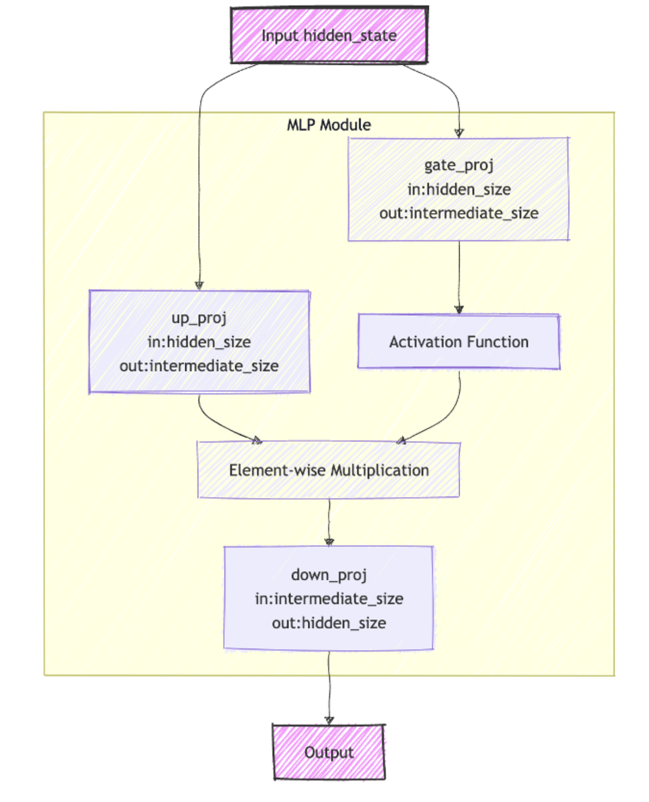
训练范式¶
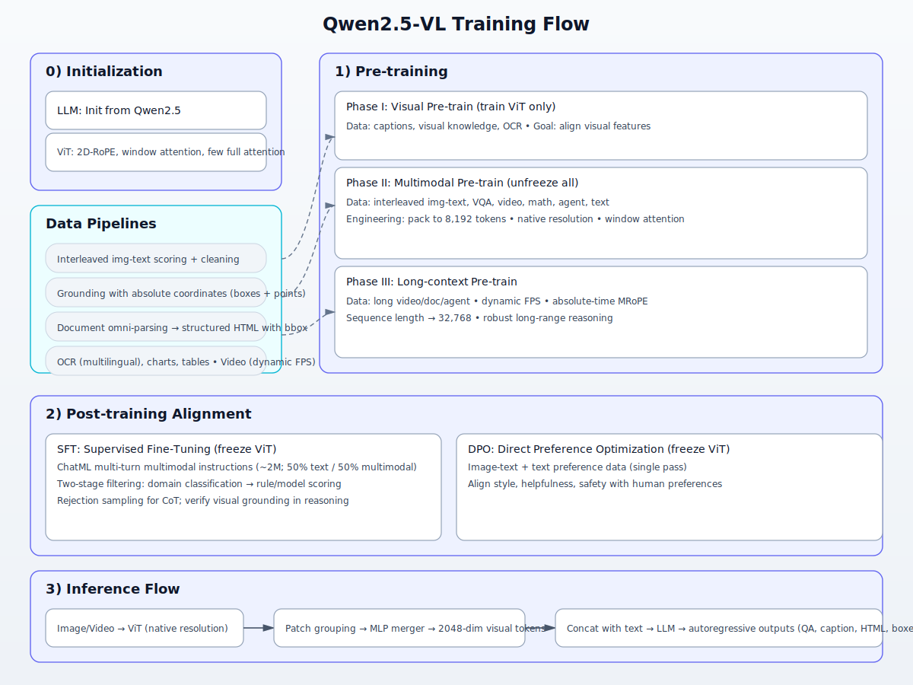
- 初始化（0） - LLM 用 Qwen2.5 预训练权重启动，作为语言主干。 - 视觉端为重构的 ViT：原生分辨率输入、窗口注意力，少数层保留全局注意力；2D‑RoPE/3D patch（视频）以支持空间/时间位置。 - 视觉特征经“邻域分组 + MLP 合并器”压缩至与文本相同维度，便于接入 LLM。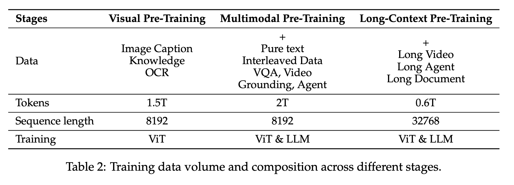
- 预训练（1）（与Qwen2-VL，预训练数据量 1.2T -> 4T） - 阶段 I：视觉预训练（仅训练 ViT） - 数据：图像字幕、视觉知识、OCR。 - 目标：让视觉特征更好地对齐语言空间。 - 阶段 II：多模态预训练（全参数） - 数据：图文交错、VQA、视频、数学、Agent、纯文本。 - 工程：按送入 LLM 的长度统一打包到 8,192 tokens；保持原生分辨率与窗口注意力，平衡算力。 - 阶段 III：长上下文预训练 - 数据：长视频、长文档、长序列代理任务。 - 配置：序列长度 32,768；动态 FPS；MRoPE 的时间维与绝对时间对齐，增强长程推理稳定性。数据管线（支撑面）
- 图文交错：先常规清洗，再由内部评估模型从文本质量、图文相关性、互补性、信息密度平衡四维打分筛选。
- Grounding：训练使用“原图绝对坐标”（框与点），同时扩展开放类目与多实例场景，提升定位泛化。
- 文档解析：将文本、表格、图表、公式等转换为含 bbox 的结构化 HTML，统一表示并保留版面信息。
- OCR/表格/图表/视频：多语种与高质量合成结合；视频动态采样 FPS，覆盖不同时间节奏。
后训练对齐（2）
- SFT（冻结 ViT）
- 使用 ChatML 格式的多轮多模态指令数据（约 200 万条，文本/多模态各占 50%）。
- 两阶段过滤：领域分类 → 规则与模型打分；拒绝采样强化链式思考，并校验视觉信息是否被正确使用。
- DPO（冻结 ViT）
- 基于偏好数据（图文与纯文本），一次遍历对齐风格、帮助性与安全性，使生成更贴合人类偏好。
- SFT（冻结 ViT）
推理流程（3）
- 图像/视频进入 ViT，按原生分辨率分块；邻域特征聚合并经 MLP 压缩为 2048 维视觉 token。
- 与文本拼接后送入 LLM，自回归生成答案、描述、结构化 HTML 或定位框等。
讲解提示
- 强调“原生分辨率 + 窗口注意力 + MLP 合并”是效率关键。
- MRoPE 的“绝对时间对齐”使不同帧率的视频理解更稳健。
- “三阶段预训 + SFT + DPO”分别解决“看懂”“会用”“更合意”的三层目标。
2025.01，DeepSeek发布DeepSeek-R1¶
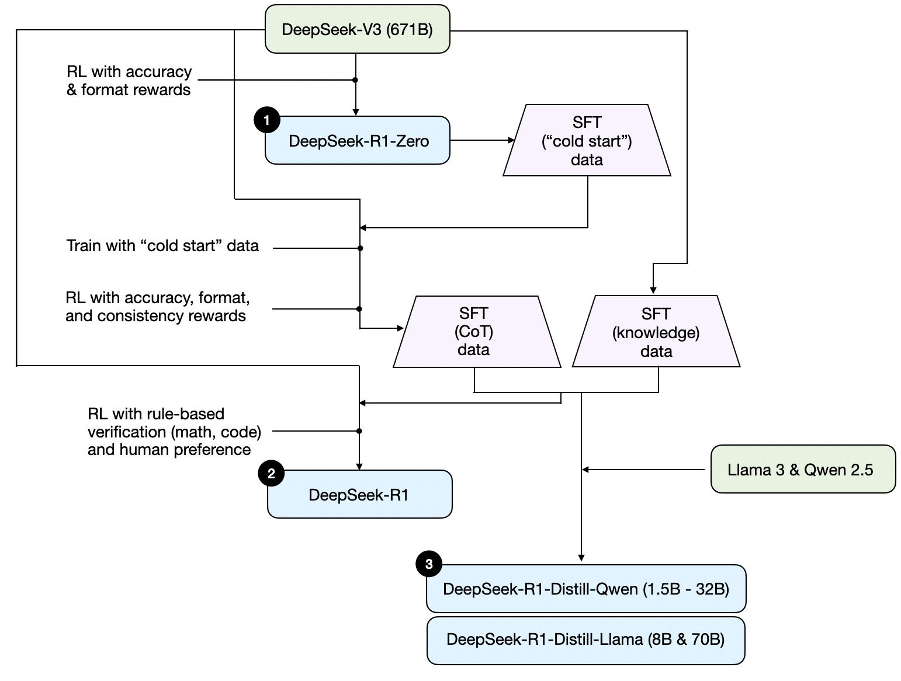
要概述一下《DeepSeek R1 技术报告》中所描述的 DeepSeek R1 流程。这份报告既是一个有趣的案例研究，也是开发推理大型语言模型的蓝图。 需要注意的是，DeepSeek 并没有发布单一的 R1 推理模型，而是推出了三种不同的变体：DeepSeek-R1-Zero、DeepSeek-R1 和 DeepSeek-R1-Distill。根据该技术报告中的描述，我在下面的图表中总结了这些模型的开发过程。 DeepSeek R1 技术报告中所讨论的 DeepSeek 三种不同推理模型的开发过程。 接下来，让我们简要回顾一下上面图表中展示的过程。更多细节将在下一部分中介绍，在那里我们会讨论构建和改进推理模型的四种主要方法。
（1）DeepSeek-R1-Zero： 该模型基于 2024 年 12 月发布的 6710 亿参数预训练模型 DeepSeek-V3 基础模型。研究团队使用带有两种奖励的强化学习（RL）对其进行训练。这种方法被称为 “冷启动” 训练，因为它没有包含监督微调（SFT）步骤，而这一步骤通常是基于人类反馈的强化学习（RLHF）的一部分。
（2）DeepSeek-R1： 这是 DeepSeek 的旗舰推理模型，以 DeepSeek-R1-Zero 为基础构建而成。该团队通过额外的监督微调阶段和进一步的强化学习训练对其进行了优化，在 “冷启动” 的 R1-Zero 模型基础上进行了改进。
（3）DeepSeek-R1-Distill： 利用之前步骤中生成的监督微调数据，DeepSeek 团队对 Qwen 和 Llama 模型进行了微调，以增强它们的推理能力。虽然这并非传统意义上的蒸馏，但该过程包括使用更大的 DeepSeek-R1 6710 亿参数模型的输出对更小的模型（Llama 80 亿和 700 亿参数模型，以及 Qwen 15 亿–300 亿参数模型）进行训练。

2025.04，阿里发布Qwen3¶
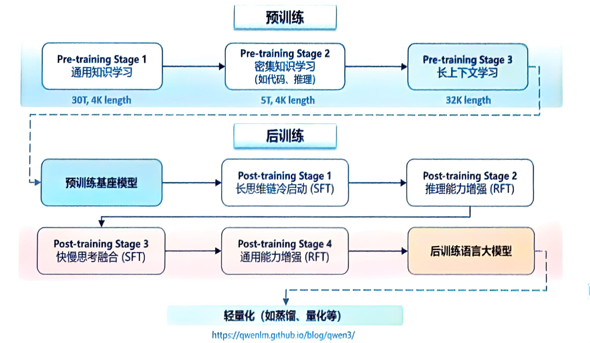
预训练¶
在预训练方面，Qwen3 的数据集相比 Qwen2.5 有了显著扩展。Qwen2.5是在 18T 个 token 上进行预训练的，而 Qwen3 使用的数据量几乎是其两倍，达到了约 36 T个 token，涵盖了 119 种语言和方言。 为了构建这个庞大的数据集，我们不仅从网络上收集数据，还从 PDF 文档中提取信息。我们使用 Qwen2.5-VL 从这些文档中提取文本，并用 Qwen2.5 改进提取内容的质量。 为了增加数学和代码数据的数量，我们利用 Qwen2.5-Math 和 Qwen2.5-Coder 这两个数学和代码领域的专家模型合成数据，合成了包括教科书、问答对以及代码片段等多种形式的数据。
预训练过程分为三个阶段。
- 在第一阶段（S1），模型在超过 30 T个 token 上进行了预训练，上下文长度为 4K token。这一阶段为模型提供了基本的语言技能和通用知识。
- 在第二阶段（S2），我们通过增加知识密集型数据（如 STEM、编程和推理任务）的比例来改进数据集，随后模型又在额外的 5 万亿个 token 上进行了预训练。
- 在最后阶段，我们使用高质量的长上下文数据将上下文长度扩展到 32K token，确保模型能够有效地处理更长的输入。
由于模型架构的改进、训练数据的增加以及更有效的训练方法，Qwen3 Dense 基础模型的整体性能与参数更多的Qwen2.5基础模型相当。
- 例如，Qwen3-1.7B/4B/8B/14B/32B-Base 分别与 Qwen2.5-3B/7B/14B/32B/72B-Base 表现相当。
- 特别是在 STEM、编码和推理等领域，Qwen3 Dense 基础模型的表现甚至超过了更大规模的 Qwen2.5 模型。
- 对于 Qwen3 MoE 基础模型，它们在仅使用 10% 激活参数的情况下达到了与 Qwen2.5 Dense 基础模型相似的性能。这带来了训练和推理成本的显著节省。
后训练¶
为了开发能够同时具备思考推理和快速响应能力的混合模型，我们实施了一个四阶段的训练流程。该流程包括：（1）长思维链冷启动，（2）长思维链强化学习，（3）思维模式融合，以及（4）通用强化学习。
- 在第一阶段，我们使用多样的的长思维链数据对模型进行了微调，涵盖了数学、代码、逻辑推理和 STEM 问题等多种任务和领域。这一过程旨在为模型配备基本的推理能力。
- 第二阶段的重点是大规模强化学习，利用基于规则的奖励来增强模型的探索和钻研能力。
- 在第三阶段，我们在一份包括长思维链数据和常用的指令微调数据的组合数据上对模型进行微调，将非思考模式整合到思考模型中。确保了推理和快速响应能力的无缝结合。
- 最后，在第四阶段，我们在包括指令遵循、格式遵循和 Agent 能力等在内的 20 多个通用领域的任务上应用了强化学习，以进一步增强模型的通用能力并纠正不良行为。
A1 基本原理：微调的核心价值与基本思路¶
从迁移学习与分布偏移出发，说明监督微调（SFT）与对齐的关系，明确全参数微调（FPFT）与高效参数微调（PEFT）的本质差异与边界条件；通过小规模示例说明目标函数、学习率与批大小等关键超参对收敛与泛化的作用，并给出观察与记录要点。
从迁移学习与分布偏移谈起¶
- 迁移学习的本质：先在大规模通用数据上预训练，再把已有能力“迁移”到目标任务/领域上。
- 分布偏移的三类：
- 输入分布偏移（covariate shift）：用户提问的风格、格式、领域变了。
- 标签分布偏移（label shift）：答案的总体分布变了（比如更偏短、更谨慎）。
- 概念偏移（concept shift）：对同一输入，社会/规范上“什么是好答案”的判定变了。
- 对应地，迁移阶段既要让模型适应新输入风格，也要让输出符合“新的好答案标准”。
SFT 与“对齐”的关系¶
- SFT（监督微调）是什么：用高质量、人类示范的输入-输出对做“模仿学习”。它主要解决“看起来像”的问题——让模型学会在目标指令分布下，产出像样的答案。
- 对齐（alignment）是什么：让模型“做我们真正希望它做的事”，不仅要“像人类”，更要“符合人类偏好与安全规范”。常用方法含偏好优化（RLHF、DPO、KTO）、宪法式原则（Constitutional AI）、拒答/安全调优等。
- 两者关系：
- SFT常作为对齐的“地基”：先把模型带到“能按指令说清楚”的位置。
- 对齐在此基础上，解决“更合意、更安全”的目标，即更侧重偏好与规范层面的“概念偏移”校正。
- 只做SFT常提升“在分布内”的表现，但对偏好权衡、价值冲突和长尾安全不足；因此“对齐 ≠ 仅SFT”。
FPFT 与 PEFT 的本质差异¶
- FPFT（全参数微调）：
- 更新全部参数，容量最大，可深度重塑表示与推理过程。
- 代价高（显存/算力/时间/存储），易遗忘通用能力，需要更稳健的训练与评估。
- 产出的是“一个新模型”，不易快速切换多领域变体。
- PEFT（高效参数微调，例如 LoRA/Adapter/Prefix/BitFit/QLoRA）：
- 冻结骨干，只训练小量增量参数（常为低秩或小模块）。
- 训练/部署成本低、易维护，多域多版本可即插即用，保留基座的通用能力。
- 表达能力受限：巨大或结构性分布偏移时可能“力有未逮”，需要更高秩、更广覆盖，或最终转向FPFT。
选择的边界条件与经验法则¶
- 优先考虑 PEFT 的情形：
- 资源有限、需要快速迭代或维护多套领域/品牌风格（可并行挂多适配器）。
- 主要是“输入风格/领域/格式”的偏移，或中等强度的偏好与安全校正（典型指令跟随、拒答策略、语气规范）。
- 数据量中小（如百万至数亿级标注/指令tokens），希望尽量保留基座能力、降低遗忘。
- 产业常态：SFT与偏好优化（RLHF/DPO）多数可用PEFT/QLoRA达到很强效果（即使在大模型上）。
- 需要 FPFT 的情形：
- 极大或结构性分布偏移：需要系统性重塑内部表示与推理（如跨脚本低资源语言的深度能力、从零注入复杂算法/专业知识体系）。
- 单一高性能定制：为某一任务/领域榨干上限，且算力/数据充足（十亿级以上tokens）；
- 架构/词表层改动或跨模态深改（如新增模态投影层、系统性调整归一化/路由机制）。
- 广谱安全/价值修复：需要内化到表示层的大规模纠偏，而非仅输出层面的策略修正。
- 折中与进阶：
- 扩大PEFT覆盖面与秩（更高rank、更广层数），或局部解冻（如LayerNorm、输出头）可显著拉近FPFT效果。
- 多阶段流程常见且有效：基座 → SFT（PEFT/QLoRA）→ 偏好优化（DPO/RLHF，仍可用PEFT）→ 必要时再做局部解冻或转FPFT。
一句话把握¶
SFT让模型“像人类那样答”；对齐让模型“按人类真正想要的那样做”。
PEFT高效、安全、易维护，适合多数指令与对齐工作；FPFT代价更高，但在巨大分布偏移或追求极限性能时更有把握。
小结
- SFT解决“在新分布下学会表达”，对齐解决“按人类价值进行取舍与守则”。
- PEFT是工业界主力路径；FPFT用于超大改造、极致定制或架构层需求。
A2 微调范式对比：FPFT、LoRA、AdaLoRA、QLoRA¶
建立“任务规模×算力×时限×维护成本”的选型框架：FPFT具备充分表达但资源开销较大；LoRA以低秩分解提升参数效率；AdaLoRA在秩自适应下改善表达与稳定性；QLoRA以量化降低显存占用但需关注量化误差。基于统一数据与评测口径，形成各范式在显存、吞吐与效果上的可比结论，用于实际决策。
1 模型训练时的内存消耗¶
微软：《ZeRO: Memory optimizations Toward Training Trillion Parameter Models》
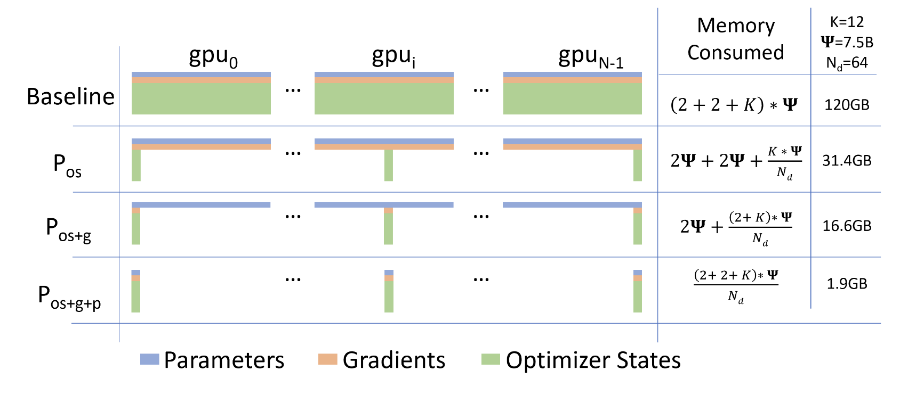
图 1：比较模型状态的每设备内存消耗，并采用三个阶段的 ZeRO-DP 优化。 Ψ表示模型大小（参数数），K表示优化器状态的内存乘数，Nd表示DP度。 在本例中，我们假设模型大小为 Ψ = 7.5B，DP 为 Nd = 64，K = 12，基于 Adam 优化器的混合精度训练。例如，一个拥有1.5B参数的GPT-2模型，在16位精度（FP16）下其参数（或权重）需要3GB的内存，但使用TensorFlow或PyTorch在单个GPU（显存为32GB）上训练时却无法实现。人们不禁会好奇，所有这些内存都去了哪里？ 在模型训练过程中，大部分内存被模型状态占用，即包含优化器状态、梯度和参数的张量。除这些模型状态外，其余的内存主要由激活值、临时缓冲区和碎片化的内存组成，我们统称为残余状态。以下我们会详细探讨这些内存消耗的具体情况。
A. 模型状态：优化器状态、梯度和参数¶
在训练过程中，设备的绝大部分内存都被模型状态占用。例如，Adam优化器[6]是深度学习中最常用的优化器之一。Adam需要存储两个优化器状态：
- 动量（Momentum）——对梯度的时间平均；
- 方差（Variance）——梯度的二阶矩估计。
因此，在使用Adam训练模型时，必须有足够的内存来保存这两个状态的副本。此外，还需要存储梯度和模型参数本身。在这三类与参数相关的张量中，优化器状态通常占用最多的内存，特别是在混合精度训练（Mixed-Precision Training）中。
混合精度训练
当前关于训练大模型的先进方法是采用混合精度（FP16/FP32）训练[26]，即将参数和激活值存储为FP16，从而利用GPU上的张量核心（Tensor Core）实现高吞吐量[27]。在混合精度训练中，前向传播和反向传播都使用FP16的权重和激活值。但为了有效地计算和应用更新（如梯度下降），优化器会保留FP32的参数副本和其他优化状态。
以Adam优化器为例，训练拥有Ψ个参数的模型时，需要同时存储：
- 参数的FP16副本和梯度（每个占用2Ψ字节）；
- 参数的FP32副本、动量和方差（每个占用4Ψ字节）。
定义“优化器状态所需的额外内存倍数”为K，即存储这些状态额外所需的内存与Ψ的乘积。例如，混合精度Adam的K值为12。 因此，总的内存消耗为：
2Ψ（FP16参数） + 2Ψ（FP16梯度） + KΨ（FP32优化器状态） = 16Ψ 字节
对于参数量为15亿（1.5B）的GPT-2模型，内存需求至少为24GB。而仅存放FP16参数的内存需求仅为3GB，明显远远低于实际所需。
B. 残余内存消耗¶
激活值在训练中也会占用大量内存[8]。 以1.5B参数、序列长度为1000、批次大小为32的GPT-2模型为例，大约需要60GB的内存。 为了降低激活值的内存占用，通常会采用激活检查点（Activation Checkpointing）技术，即只存储部分激活值，待需要时再重新计算（Recomputation），将激活值内存削减至原来的平方根左右，但会带来约33%的额外计算开销[8]。 使用激活检查点后，该模型的激活内存可以减至约8GB。 虽然这种方法显著减少了激活值内存占用，但对于更大规模的模型（如参数达到100B级），即使采用激活检查点，内存需求仍然高达约60GB（批次大小为32）。
此外，用于存储中间结果的临时缓冲区也会消耗不少内存。在某些操作中，例如梯度全规约（All-Reduce）或梯度范数计算，为了提升吞吐量，所有梯度通常会被“融合”到一个扁平缓冲区中进行操作。比如，跨设备的All-Reduce操作在大消息传输中效率更高。 这些缓冲区通常是FP32的张量（即更高精度），虽然梯度本身多为FP16，但融合缓冲区的大小依操作而定。当模型参数很大时，这些临时缓冲区的大小是不可忽视的。以15亿参数的模型为例，扁平化的FP32缓冲区大约需要6GB。
内存碎片化 至此，我们讨论了训练中实际的内存消耗。但是即使系统中有很多剩余内存，也可能由于碎片化导致“可用内存不足”而无法成功分配所需空间。 这是因为内存的碎片化现象：请求的连续内存块不足，而实际上总剩余内存远大于请求值。特别是在训练极大模型时，碎片化问题尤为严重，甚至在仍有30%以上总内存未被使用的情况下也会出现“内存溢出”问题。
2 DeepSeed-ZeRO¶
简要介绍当前广泛使用的分布式训练范式，由微软提出的DeepSpeed-ZeRO-DP。
虽然现有的DP方法在每台设备上复制模型状态，并带来显著的内存开销，ZeRO-DP通过将优化器状态、梯度和参数划分到各个数据并行进程中，消除了这种内存冗余。图1量化并可视化了有无ZeRO-DP情况下的内存需求。该图显示了在每个优化阶段（Pos、Pg 和 Pp）后，经过划分后内存占用的变化情况，即优化的三个阶段。
A. Pos：优化器状态划分 （ZeRO-1: Pos）¶
对于数据并行度为 Nd 的情况，我们将优化器状态平均划分为 Nd 个部分，使第 i 个数据并行进程只更新对应第 i 个划分的优化器状态。
因此，每个数据并行进程仅需存储和更新总优化器状态的 1/Nd ，以及参数的 1/Nd。
为确保所有参数都已更新，我们在每个训练步骤结束后，进行一次全体收集（all-gather）操作，以获得所有数据并行进程中更新的完整参数。
内存节省：如图1所示，经过状态划分后，内存消耗从 4Ψ + KΨ 减少到 4Ψ + (KΨ)/Nd。以图中示例为例，一个参数为75亿的模型在64路DP（Nd=64）下使用Pos优化后，需要31.4GB内存，而标准DP则需要120GB。此外，当Nd值较大时，模型状态的内存需求从 16Ψ（即4Ψ + 12Ψ）减少到约4Ψ，减少了约4倍。
B. Pg：梯度划分 （ZeRO-2: Pos+g）¶
每个数据并行进程只更新对应参数部分的梯度，因此它只需要对应参数的缩减梯度。在反向传播过程中，梯度会在对应的进程上被归约（reduce），随后不再需要这些梯度，相关内存可以释放。这将原本占用 2Ψ 内存的梯度空间，缩减到 2Ψ/Nd。
这基本上是一个Reduce-Scatter操作，不同参数对应的梯度被分散到不同的进程进行减少。为了提高效率，我们采用分桶策略：将所有对应同一分区的梯度归入一个桶，并对整个桶进行减少操作。这类似于NVIDIA AMP优化中的梯度桶化，旨在Overlap通信和计算。在本方法中，我们在分区边界执行reduce操作，以减少内存占用并实现通信与计算的重叠。
内存节省：通过去除梯度和优化器状态的冗余，内存需求进一步降低到 2Ψ + (14Ψ)/Nd。以图中的例子为例，使用Pos+g在64路DP下，参数为75亿的模型只需约16.6GB内存，而标准DP则需要120GB。当Nd较大时，模型状态的内存从 16Ψ 下降到约2Ψ。
C. Pp：参数划分 （ZeRO-3: Pos+g+p）¶
参数的处理方式与优化器状态和梯度相似。每个进程只存储所属分区的参数，当需要其他分区的参数进行前向或反向传播时，相关参数通过广播（broadcast）从对应的进程获取。虽然这似乎会带来较大通信开销，但实际上仅会使总通信量变为基线DP的1.5倍，同时实现的内存节省与模型复制（MP）相当，但通信开销只有其一部分，具体在第七章C节详细讨论。
内存节省：采用参数划分后，模型参数为 Ψ 时的存储需求从 16Ψ 降到 16Ψ/Nd。以示例模型为例，在64路DP下使用Pos+p+g，只需约1.9GB模型状态内存，而非标准DP下的120GB。这意味着，ZeRO显著扩展了DP的能力——只要有足够多的设备共享模型状态，就能训练规模更大的模型。
D. 模型规模的影响¶
Pos、Pos+g 和 Pos+g+p三个划分阶段，分别将模型状态的内存需求在每个数据并行进程内部，减少至原来的4倍、8倍和Nd倍。表一分析了不同模型在这三个阶段的内存消耗情况。没有ZeRO时，无论DP程度如何，内存都等于第一行的值。当Nd=64时，使用Pos、Pos+g和Pos+g+p，ZeRO可以训练多达7.5亿、14亿和128亿参数的模型。若Nd=1024，启用所有ZeRO优化后（Pos+g+p），甚至能训练参数达一万亿（1万亿）的模型。没有ZeRO，DP最大的模型只能训练不到15亿参数。
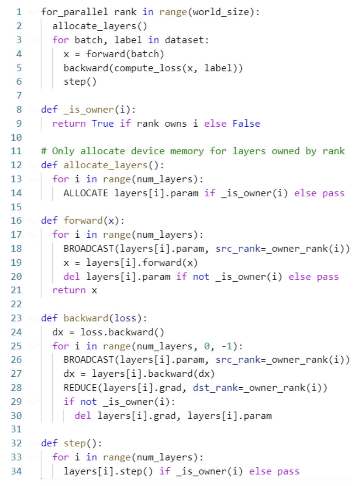
如图为ZeRO-DP三阶段都启用的伪代码。先给每个进程都分配一部分层，前向传播时逐层收集模型切片然后计算然后释放模型切片，反向传播时逐层收集模型切片然后计算然后规约，然后释放模型切片+梯度切片。
3 各微调范式介绍¶
3.1 Lora¶
3.3 QLora¶
FPFT、LoRA、QLoRA 微调范式选型思路¶
围绕三种主流范式，给出原理、显存估算、示例与适用场景，最后给出简明选型准则。
一、全参数微调（FPFT）¶
- 原理（做什么）
- 更新模型全部权重，能够系统性重塑表示与推理过程；常配合混合精度与分布式（ZeRO-2/3）、激活检查点。
- 显存估算（怎么算）
- 核心占用（FP16/BF16 + AdamW）：参数 2X + 梯度 2X + 优化器状态 8X = $12X$ GB
- 含激活与开销的经验预算：下限约 14X–18X GB；更稳妥按 ≥ 20X GB 估。
- 激活粗估：$ \text{ActMem} \approx \text{batch} \times \text{seq} \times \text{hidden} \times \text{layers} \times \text{bytes} \times f $，bytes≈2（FP16），f 常取 2–3。
- 示例（多大卡能跑）
- 7B：核心 ≈ 12×7=84 GB；加激活后 >100 GB。常用 2×80GB（ZeRO-2/3）。
- 70B：核心 ≈ 840 GB；总需求 >1 TB，需要多机多卡集群。
- 适用场景（何时用）
- 极大/结构性分布偏移（跨语种深改、专业知识体系注入）。
- 追求单一领域极限性能；需要内化价值/安全到表示层。
- 做架构/词表/模态侧改动。
- 注意点（风险与建议）
- 成本高、易遗忘通用能力；需严格评测与回滚预案。
- 建议：BF16 优先、激活检查点、梯度累积、ZeRO 分片、梯度裁剪与稳定的 LR 计划。
二、LoRA（Low-Rank Adaptation）¶
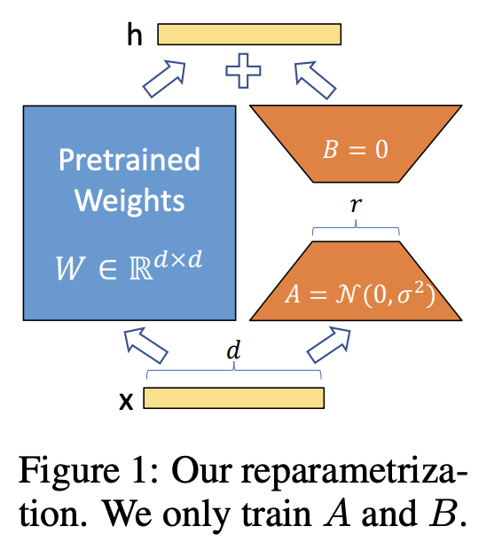
- **原理（做什么）** - 冻结基座，给部分权重矩阵注入低秩增量 $\Delta W = A B$，仅训练少量适配器参数，显著降显存/存储/部署成本。 - **显存估算（怎么算）** - 基座（FP16/BF16）≈ $2X$ GB；LoRA 参数/梯度/优化器相对很小。 - 总显存 ≈ $2X$ GB + 激活 + 少量开销；经验范围 ≈ (2.5–4)×X GB（取决于激活）。 - **示例（多大卡能跑）** - 7B：基座 ≈14 GB；激活（有检查点、适中 batch/seq）≈5–15 GB → 总计 ≈20–30+ GB（24–40GB 卡可行）。 - 70B：基座 ≈140 GB；总计 ≈160–190+ GB（2–3×80GB）。 - **适用场景（何时用）** - 资源有限、需快速迭代/多域多版本（易插拔、便于合并/切换）。 - 输入风格/格式偏移、中等强度偏好与安全对齐（SFT/DPO/RLHF 的主力路径）。 - **注意点（风险与建议）** - 表达受限：rank/覆盖层数不足时上限受约束；必要时提高 rank/层覆盖或局部解冻。 - 关键超参： - **rank r**（表达力/容量）、**alpha**（缩放）、**dropout**（正则）、 - **target modules**（常见 q/k/v/o、MLP 投影层）、 - **学习率/调度**（LoRA 参数可用较大学习率，注意稳定性）。三、QLoRA（4-bit 基座 + LoRA）¶
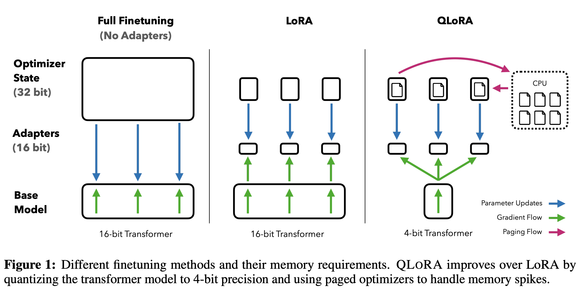
- **原理（做什么）** - 将基座权重量化到 4-bit（如 NF4，常配 Double Quant），计算仍用 FP16/BF16，训练仅 LoRA 适配器；可配“分页优化器”降低峰值显存。 - **显存估算（怎么算）** - 基座 4-bit 近似 ≈ $0.5X$ GB（含量化开销近似）；总显存多在 (0.7–1.5)×X GB。 - 激活仍是大头，需同样依赖梯度检查点与 batch/seq 控制。 - **示例（多大卡能跑）** - 7B：基座 ≈3.5–5 GB；总计常 10–16 GB（单卡 12–24GB 友好）。 - 70B：在 80GB 单卡上有机会跑通（batch/seq 受限，吞吐较低）。 - **适用场景（何时用）** - 单卡显存紧张（10–24GB）也要完成指令微调/原型验证。 - 多域多版本、成本敏感、需要快速试错与上线演示。 - **注意点（风险与建议）** - 量化误差可能影响难任务/细粒度对齐，建议：NF4 + 双量化、计算类型 BF16、谨慎量化嵌入/LayerNorm。 - 可能需要提高 LoRA rank/扩大覆盖弥补量化损失；强烈建议激活检查点与小 batch 试跑观测峰值显存。四、选型总览（快速决策）¶
- 先看算力/时限
- 单卡 ≤24GB：优先 QLoRA；24–80GB：优先 LoRA；充足多卡、追极限：FPFT。
- 再看任务“偏移强度”
- 结构性/极大偏移、架构改动：FPFT；中等或输入风格偏移：LoRA/QLoRA。
- 再看业务诉求
- 单一高性能定制与深度内化：FPFT；多版本快速迭代与低成本维护：LoRA/QLoRA。
- 共同工程建议
- 激活检查点（几乎必备）、梯度累积、监控
torch.cuda.max_memory_allocated()、必要时用 ZeRO-2/3 分片；小 batch/短 seq 先试跑再放大。
- 激活检查点（几乎必备）、梯度累积、监控
——
- 总结要点
- FPFT：能力最强、成本最高；按 ≥20X GB 估显存，适合极大偏移与极限性能需求。
- LoRA：性价比高、上线友好；显存 ≈(2.5–4)×X，适合多数 SFT/对齐工作。
- QLoRA：极致节省；显存 ≈(0.7–1.5)×X，适合单卡/低成本快速验证与多版本维护。
# conda环境
conda create -p ./env python=3.10
conda activate ./env
# ms-swift训练环境
git clone https://github.com/modelscope/ms-swift.git
cd ms-swift
pip install -e .
cd ..
# 下载模型文件
apt-gpt update
apt-get install git-lfs
git lfs install
mkdir models && cd models
GIT_LFS_SKIP_SMUDGE=1 git clone https://hf-mirror.com/Qwen/Qwen2.5-VL-3B-Instruct
cd Qwen2.5-VL-3B-Instruct/
git lfs pull
cd ..
GIT_LFS_SKIP_SMUDGE=1 git clone https://hf-mirror.com/Qwen/Qwen2.5-VL-7B-Instruct
cd Qwen2.5-VL-7B-Instruct/
git lfs pull
cd ..
2 标准微调流程¶
A4框架选型与环境准备：unsloth / ms-swift / llama-factory¶
讲解两框架在 SFT/PEFT/对齐中的接口与流水线差异，结合显存与吞吐的经验阈值给出适配建议；完成环境验证与基线运行，记录资源占用、收敛速度与稳定性，为下午的案例训练提供可靠起点。
A5 LoRA / QLoRA 案例（指令遵循小模型）¶
在单卡（≤24GB）条件下完成一次基于 LoRA 或 QLoRA 的指令微调演示；比较不同秩、α、dropout、量化位宽、学习率、批大小对收敛与输出质量的影响；开展推理验证并记录延迟与效果的关键观察点，沉淀参数选择的经验规则。
A6 Prompt 工程与数据合成（小样本强化）¶
目标¶
- 在明确任务结构的前提下，设计可迁移的提示模板。
- 通过变量化与多样化扩展少量样本，实现低成本数据放大。
- 建立自动+人工的质检与偏差控制，确保合成数据可用且稳健。
- 在小样本条件下验证对特定子任务的实际增益，并沉淀可复用资产。
一、任务结构化与可迁移模板¶
- 任务卡（Task Card）最小字段
- 任务定义：问题类型（抽取/分类/生成/归纳/推理）。
- 输入要素：文本/表格/图像描述、上下文、可用外部知识。
- 约束与规则：格式（如 JSON schema）、边界（不可编造/必须引用）、长度与语气。
- 输出结构：字段名、类型、取值域、必填/可选。
- 评测口径：正确性、完整性、格式通过率、引用一致性等。
- 通用模板骨架（可迁移）
- 系统位（原则/安全/风格） → 任务说明 → 约束与输出 schema → 辅助示例（可选）→ 待处理输入。
- 代表性模板（示例）
[信息抽取·结构化输出]
你是一名信息抽取系统。请从输入中抽取{领域}要素，遵循下述 JSON Schema。
约束：
- 不得编造缺失字段；无法确定时输出 null。
- 返回严格 JSON，禁止多余文本。
Schema：
{schema}
输入：
{input}
输出：
[分类判定·多标签]
任务：将文本判定为以下标签集合的子集：{labels}。
规则：
- 定义遵循：{label_definitions}
- 若证据不足则输出 []，并给出"rationale"说明（50字以内）。
输出 JSON：{"labels": string[], "rationale": string}
文本：
{input}
[摘要与格式遵循]
请生成{风格}摘要，满足：
- 字数 ≤ {max_tokens}；必须覆盖：{key_points}
- 输出 Markdown 列表，每项一句话
输入：
{input}
二、变量化与多样化策略¶
- 变量槽位定义
- 领域 {domain}、角色 {role}、风格 {style}、长度 {len}、难度 {difficulty}、语言 {lang}、标签集 {labels}、Schema {schema}、示例 {few_shots} 等。
- 值域与采样
- 分层采样（按领域/难度/长度），覆盖表控制每一维的最小占比（如每域≥10%、每难度级≥15%）。
- 组合设计优先“正交覆盖”（尽量少的组合覆盖多维度）。
- 多样化维度
- 语义保持改写（同义、语序、指代、信息焦点变换）。
- 风格切换（客观/摘要/要点式/说明书式）。
- 结构扰动（字段顺序、可选字段缺省），训练鲁棒解析。
- 受控噪声（拼写/口语/混排单位/中英夹杂）与负样本（无关文本）。
- 跨语言与领域迁移（{lang} ∈ zh/en；{domain} 在财经/医药/政务间切换）。
- 复杂度分层（单句→多句→跨段落）。
- 生成配方（最小流程）
- 准备10–50条高质量“种子样本”。
- 设定模板与变量值域，分层采样生成“任务指令”。
- 产出候选回答（温度0.2–0.5，多样性受控）。
- 进行自动质检+交叉核验，通过者入库；不通过者重写或剔除。
三、合成数据质检与偏差控制¶
- 自动化结构与格式
- JSON 严格校验（字段、类型、必填、取值域）。
- 解析失败率阈值（如 ≤ 1%）；超阈即回退并修正模板。
- 正确性与一致性
- 可编程判定：可由规则/脚本核验（如正则、数值范围、枚举）。
- 证据对齐：若需要引用，将回答片段与来源文本做重叠率/相似度校验（阈值如≥0.8）。
- 语义蕴含检查：输入→输出为“蕴含/中立/矛盾”，拒收矛盾样本。
- 质量信号与去噪
- 语言流畅度/长度异常、重复率（n-gram 去重）、困惑度异常；自动降权或剔除。
- 近重复与数据泄漏：基于嵌入相似度去重（阈值如≥0.95 视为重复）。
- 安全与隐私
- 敏感字段屏蔽（PII/密钥/医疗隐私），域内关键词黑白名单。
- 毒性/违规检测通过率≥99%（不过者全量剔除）。
- 分布与偏差控制
- 覆盖表监控：领域/语言/长度/难度/标签分布与目标分布的 KL 差异在阈值内。
- 头部样本限额与长尾补齐；正/负、易/难比例可控（如 6:4）。
- 人审抽检
- 分层抽检率（总体1–5%，新模板首批20%），使用统一评分表（正确性/完整性/遵循/安全性），不合格样本反馈回修。
四、小样本条件下的增益验证¶
- 实验设计
- 基线：零样本或少样本（K=10–50）直接训练/推理。
- 处理组：在基线上加入经质检的合成数据（比例如1:1、1:3 对真实）。
- 统一评测集与指标：任务正确率、格式通过率、指令遵循度、引用一致性。
- 统计与消融
- 记录 Δ指标（如正确率+X%、格式失败率−Y%）。
- 消融：去掉多样化、去掉负样本、去掉跨域，看单项贡献。
- 小样本检验：随机种子固定；重复N次取均值±方差，必要时做显著性检验。
- 推荐配比（经验）
- 抽取/分类：真实:合成 ≈ 1:1～1:3；
- 生成/摘要：真实:合成 ≈ 1:0.5～1:2；
- 跨域迁移优先保证“结构与格式”的合成比例。
五、可复用模板与筛选标准¶
- 模板清单（可直接复用）
- 信息抽取模板（严格 JSON、不可编造）。
- 多标签分类模板（定义+证据化 rationale）。
- 指令摘要模板（风格与长度可控）。
- 步骤化推理模板（逐步列点，禁外部知识）。
- 错误定位与修复模板（生成错误说明与修正建议）。
- 对比评审模板（在A/B回答间做结构化打分）。
- 数据合成器模板（按变量表批量产出种子/难例）。
- 规范化重写模板（把自由文本改写为标准 schema）。
- 入库筛选标准（建议阈值）
- 结构通过率≥99%；
- 正确性（可编程校验）≥95%；
- 指令遵循度≥98%；
- 去重后相似度<0.9；
- 安全/隐私 0 容忍（命中即剔除）。
六、最小可行流程（落地清单）¶
- 定义任务卡 → 选模板骨架 → 设变量表与覆盖目标 → 批量合成 → 自动质检 → 分层人审 → 分布与偏差校准 → 小样本训练 → 统一评测与消融 → 归档与版本化（模板/变量/评测）。
附：示例模板片段¶
[数据合成器·变量化生成]
目标：生成{domain}领域的信息抽取样本，按{difficulty}难度，语言{lang}。
输出：包含 input（原文）、target（严格JSON，遵循{schema}）、meta（domain, difficulty, lang）。
约束：不得虚构超出原文的信息；若缺失则置 null。
请一次生成 {n} 条，确保不同写作风格与长度分布。
[对比评审·质量筛选]
任务：比较候选输出 A/B 对输入的符合度，返回评分 JSON：
{"winner": "A|B|tie", "scores": {"correctness": 1-5, "completeness": 1-5, "format": 1-5}, "reason": "简述"}
规则：若两者均未满足 schema 或编造事实，则判为 tie 并给出原因。
输入：{input}
A：{output_a}
B：{output_b}
——
- 以上方法聚焦“任务结构化→模板可迁移→变量化扩展→严谨质检→小样本增益验证”的闭环，能在有限标注成本下稳定提升特定子任务表现，且便于复制到新领域与新语言。
A7 对齐算法概览与入门实践：PPO / DPO / GRPO¶
解析三者在信号来源、稳定性与工程代价上的差异：PPO偏在线、信号获取成本高；DPO基于偏好对，路径简洁、易复现；GRPO通过分组奖励提升可控性。完成一个入门级偏好对齐示例，关注偏好数据构造、质量控制与伦理边界。
1 对齐算法概览¶
1.1 PPO¶
OpenAI《Proximal Policy Optimization Algorithms》
1.2 DPO¶
Standford《Direct Preference Optimization: Your Language Model is Secretly a Reward Model》
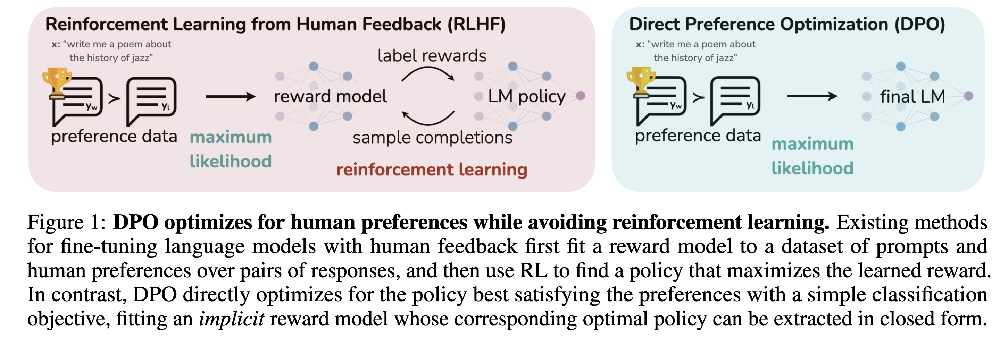
1.3 GRPO¶
DeepSeek-AI《DeepSeekMath: Pushing the Limits of Mathematical Reasoning in Open Language Models》
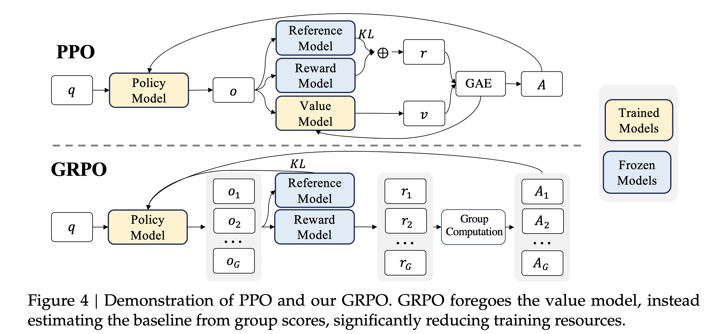
2 入门级偏好对齐示例，关注偏好数据构造、质量控制与伦理边界¶
A8 评估与上线：指标体系、灰度与回滚¶
构建任务正确率、遵循度、毒性与稳定性等指标体系，确定A/B与灰度发布流程及回滚触发条件；形成上线监控、异常处置与复盘机制的要点说明，确保从实验到生产的可追溯与可管控。
一、指标体系（评什么、怎么评）¶
- 任务正确率（Task Accuracy）：回答是否正确、完整、可复现。
- 常用口径：精确匹配（Exact Match）、F1、基于证据的正确率（回答必须引用到的文档片段）、专家评分（Likert 1–5）。
- 面向开放回答：用“评测模型”打分（多维度：正确性、覆盖度、逻辑性），配合人审抽检校准偏差。
- 指令遵循度（Instruction Following）：回答是否严格满足约束与格式。
- 口径：格式遵循率（JSON/表格/字段齐全）、约束满足率（字数、语气、边界）、拒答合理率（该拒绝时能拒绝且给出理由）。
- 毒性与合规（Safety & Compliance）：是否出现有害、有毒或违规内容。
- 口径：毒性率（Toxicity Rate）、越权输出率（隐私、医疗/法律不当建议）、越狱率（被提示工程绕过防护）。
- 分层防护：前/后置安全审查模型 + 关键词/正则/规则库。
- 稳定性与性能（Reliability & Performance）：
- 时延：TTFT（首 token 延迟）、p50/p95/p99 响应时间；吞吐（RPS/QPS）。
- 稳定：超时率、错误率（5xx/4xx）、重试率、输出格式失败率。
- 变异：输出波动（多次生成一致性）、冷启动抖动。
- 成本与运维（Cost & Ops）：
- 每请求成本、每千 token 成本、缓存命中率、检索调用次数、第三方 API 费用。
- 用户与业务（UX & Business）：
- 用户满意度（CSAT/NPS）、人工复核占比与纠错成本、留存与转化。
- 指标分层建议：
- 离线基准（固定测试集，保证可复现）
- 在线护栏（实时监控：毒性、错误、时延、成本）
- 人审抽检（高优先级场景按日/周抽检，校准评测模型偏差）
术语小贴士：
- p95/p99：95%/99% 请求的时延不超过该值（衡量“尾部时延”）。
- TTFT：Time To First Token，用户感知“开口速度”。
- 评测模型：用强模型对回答多维打分，成本低于全量人审。
二、A/B 测试与灰度发布（如何把风险降到最低）¶
- A/B 测试（对照实验）：将流量随机分为两组比较新旧方案差异，确保除了“模型版本”外其他条件一致。
- 设计要点：
- 明确主指标（如任务正确率↑）与护栏指标（毒性率、时延、成本不得恶化）。
- 样本量计算（保证统计功效），随机化单元（用户/会话），固定分桶（避免跨天穿桶）。
- 实验时长覆盖业务周期（避免节假日/活动干扰）。
- 分析要点：显著性（p 值/置信区间）、效应量（Cohen’s d）、提前停止规则（护栏触发即停）。
- 设计要点：
- 灰度发布（又称金丝雀发布/Canary）：小流量逐步放大，动态健康检查。
- 典型节奏：影子测试（0%用户可见）→ 1% → 5% → 20% → 50% → 100%。
- 影子测试（Shadow）：“新模型并行生成但不回显”，离线对比质量/时延/成本，先发现问题再放量。
- 自动化判定：每个阶段设定放量阈值（主指标提升≥X%，护栏不恶化），否则停留或回滚。
术语小贴士：
- 护栏指标（Guardrails）：出现恶化即“叫停/回滚”的红线指标（如毒性、合规、成本上限）。
- 固定分桶：同一用户在实验期内始终落在同一版本，消除个体差异干扰。
三、回滚触发条件（何时立即撤回）¶
- 安全/合规类：毒性/越权/越狱率超过阈值；监管投诉或高风险样例出现。
- 质量类：主任务正确率显著下降；关键格式失败率上升（导致下游不可解析）。
- 性能类：p95/p99 时延、超时率、错误率突增；TTFT恶化明显。
- 成本类：单位成本越线；外部 API 费率异常上涨。
- 运营类：用户投诉激增、业务 KPI 下滑（转化、留存）。
- 处置动作（自动化优先）：立即将流量切回稳定版本；切换旧提示/旧路由；降低并发、启用缓存/降级；冻结新增发布。
四、上线监控与告警（看什么、怎么报）¶
- 实时观测维度：
- 请求级：QPS、TTFT、p95、错误/超时、重试、缓存命中。
- 质量近似：格式失败率、语义一致性/自洽率（多次生成一致）、引用一致性（RAG 回答是否引用来源）。
- 安全：毒性事件、拒答合理率、可疑越狱提示命中。
- 成本：每次请求成本、token 用量、外部 API 次数与单价。
- 告警与阈值：
- 严重级别分级（P0/P1/P2），分级通知（电话/IM/邮件）。
- 动态基线 + 异常检测（相对历史均值波动）。
- 日志与隐私：
- 结构化日志字段：请求ID、用户/会话ID（匿名化）、提示版本、模型版本、输入/输出摘要、引用来源、时延/成本、决策路由。
- 脱敏与采样：敏感信息屏蔽，生产只保留必要字段与可追溯链路。
术语小贴士：
- 语义一致性/自洽：同一问题多次生成是否相似（衡量稳定性）。
- 引用一致性：回答声称的事实能否在知识库检索到对应证据。
五、异常处置机制（Runbook）¶
- 分级与责任：设定值班与升级链路（谁在 15 分钟内响应、30 分钟内决策）。
- 标准流程：
- 确认告警 → 2) 准实时止血（回滚/降级/限流/熔断） → 3) 影响评估与对外沟通 → 4) 根因分析与修复 → 5) 恢复与观察。
- 常用技术手段：
- Kill switch（全局开关）、特性开关（Feature Flag）、流量路由（老新模型并存）。
- 降级：关闭复杂工具/检索、降低采样/思考步数、启用缓存。
- 防扩散：限流、隔离问题租户/场景；动态屏蔽高风险提示模板。
- 演练：季度故障演习，验证回滚时延、告警有效性与人员协同。
六、复盘与持续改进（Postmortem）¶
- 无责复盘：记录时间线、影响面、根因（5 Whys）、侥幸因素。
- 行动项：清晰责任人/截止日期/验收标准；新增回归测试与监控规则。
- 知识沉淀：更新“评测集/风险样例库/提示模板”，把故障转化为可重复监测与测试的资产。
七、落地清单与基线 SLO 示例¶
- 发布前检查清单：
- 离线基准：正确率↑且毒性/成本/时延不劣于基线；关键场景通过人审。
- 影子测试：≥1 周业务周期，质量/时延/成本无异常。
- A/B 方案：样本量、随机化、指标/护栏、实验时长、停止规则均已配置。
- 回滚预案：一键回滚、演练通过；告警阈值与分级触发已验证。
- SLO（服务目标）示例：
- 可用性≥99.9%；TTFT p95 ≤ 600ms，响应 p95 ≤ 2.5s。
- 任务正确率 ≥ 基线 +2%；格式失败率 ≤ 0.5%。
- 毒性率 ≤ 0.05%；越狱率 ≤ 0.1%（持续下降趋势）。
- 单次请求成本 ≤ 目标上限（按日/周平均监控）。
- 自动化护栏（样例）：
- 若毒性率 10 分钟滑窗 > 阈值 → 立即回滚并通知 P0。
- 若 p95 时延 > 阈值且错误率上升 → 自动降级与限流。
- 若成本/千 token 超上限 → 切换至备选路由或启用缓存策略。
术语小贴士：
- SLI/SLI/SLA：SLI 指标、SLO 目标、SLA 对外承诺（合同级）。生产优先达成 SLO，再根据业务制定 SLA。
——
- 关键要点
- 指标成体系：正确率、遵循度、安全、稳定性、成本、业务六维联动。
- 上线走两步：先影子后灰度；A/B 有护栏与停止规则。
- 监控有抓手：实时仪表盘 + 自动化告警 + 一键回滚。
- 闭环要完备：处置—复盘—固化到评测集与监控策略。
A9 扩展课程-大模型幻觉缓解：语义熵与多模型合作¶
采用同义改写得到条件分布，计算语义熵并设定阈值以触发“自动怀疑”；结合多模型一致性裁决降低错误风险；通过对照样例展示前后指标变化，并分析误报与漏报的权衡，给出部署时的建议阈值区间。
方法一：同义改写得到条件分布，计算语义熵¶
牛津大学Nature: 《Detecting hallucinations in large language models using semantic entropy》
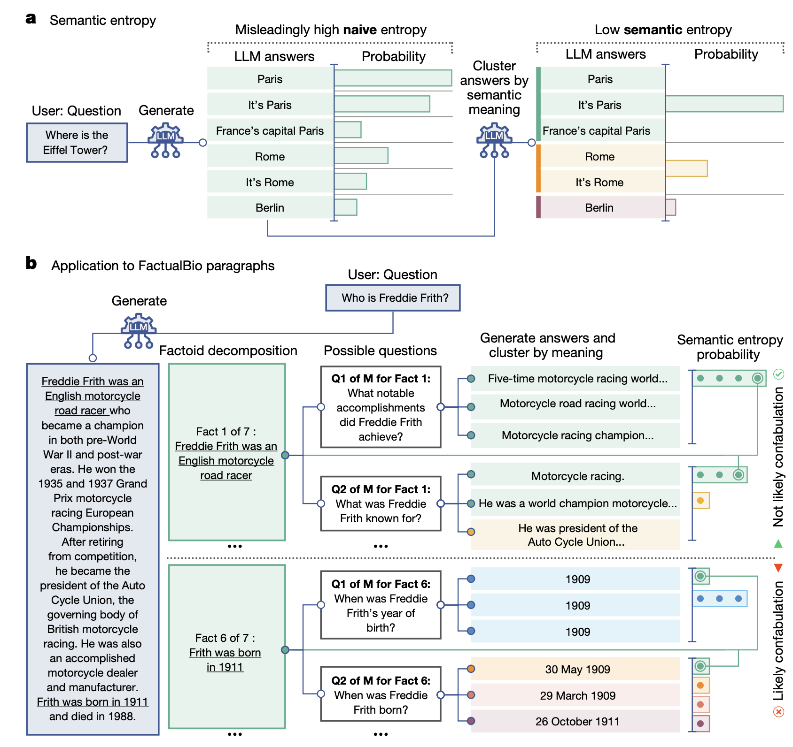
图1 | 语义熵与虚构检测概述
a. 基于熵的朴素不确定性度量会计算精确答案的变异程度，将“巴黎”“是巴黎”“法国的首都巴黎”视为不同答案。但这一方法不适用于部分语言任务——在这类任务中，有时不同表述的答案含义相同。我们提出的语义熵会先将含义相同的答案聚类，再计算熵值。语义熵值低表明大型语言模型（LLM）对答案的含义具有较高信心。
b. 语义熵还可用于检测较长文本中的虚构内容。我们会自动将模型生成的长答案分解为多个“事实单元”（factoid）。对于每个事实单元，由一个LLM生成可能对应该事实单元的问题；随后，原始LLM针对这些问题生成M个可能的答案。最终，我们会计算每个特定问题对应的所有答案（包括原始事实单元）的语义熵。若某事实单元相关问题的平均语义熵值高，则表明该事实单元可能是虚构内容。如图所示，语义熵将“事实1”（Fact 1）归类为“可能非虚构”，因为尽管各答案表述差异极大，但含义往往一致——而这种一致性是基于熵的朴素度量方法会遗漏的。
- 核心思想：通过对同一问题做多种同义改写，采样得到模型回答在“语义空间”的条件分布。如果回答集中到少数语义簇，说明语义确定性高；若分散到多个相互冲突的语义簇，说明不确定性高，幻觉风险上升。
- 步骤
- 同义改写：对原始查询生成 M 条等价表述（建议 M=8–16，兼顾稳定性与成本）。
- 回答采样：用固定温度（建议 temperature≈0.2–0.5）获取每个改写的回答。
- 语义聚类：用文本嵌入计算回答两两相似度，将相似回答归为同一“语义簇”（阈值可用余弦相似度≥0.85–0.9）。
- 概率估计：簇概率 p_i = 该簇回答数量 / 总回答数。
- 语义熵：H = −∑ p_i log p_i。为便于阈值设置，可做归一化 H_norm = H / log K（K 为簇数上界或观测到的簇数），使 H_norm∈[0,1]。
- 阈值触发“自动怀疑”：当 H_norm 超过阈值 T，则判定不确定，转入二次校验流程（如检索增强、追问澄清、多模型一致性裁决或人工复核）。
方法二：多模型一致性裁决（降低单一模型系统性错误）¶
- 核心思想：不同模型的错因和偏差不完全相同。对同一问题并行询问 N 个模型（或同一模型不同解码策略），用语义一致性与多数原则裁决，减少单点错误。
- 步骤
- 多模型回答：选择 N=2–3 个异构模型（如一个主模型+一个不同家族备选），或同一模型的多次少温采样。
- 语义对齐：同上，用嵌入聚类衡量回答是否同义。
- 一致性评分：一致性=最大簇占比；若一致性低于阈值（如 <60–70%），判定为高风险。
- 决策顺序：优先采用“有出处的答案”（带可验证证据或检索来源）→ 多数语义簇 → 不一致则触发检索/追问或人工复核。
指标与对照样例¶
- 评价指标：
- 幻觉率（Hallucination Rate）：错误且无依据的回答占比
- 精确率/召回率：基于人工标注或可验证题集
- 拒答率：因高不确定而触发“怀疑”的比例
- 平均延迟与成本：并发调用带来的时延与费用变化
- 样例 1（事实问答）
- 问：澳大利亚的首都是哪里？
- 基线（无防护）：单次回答常见“悉尼”（错误）；幻觉率较高。
- 语义熵：同义改写后出现两大簇“堪培拉”（正确）与“悉尼”（错误），H_norm 高于阈值→触发检索增强；检索返回官方页面后收敛到“堪培拉”。
- 多模型一致性：两个模型均回答“堪培拉”，一致性高→直接通过。
- 示例性整体数据（内部验证集，示意）
- 基线：幻觉率 8.1%，精确率 90.5%，平均延迟 1.0x，成本 1.0x
- 语义熵触发（T=0.45）：幻觉率 4.0%，精确率 94.3%，拒答率 6.8%，延迟 1.25x，成本 1.2x
- 多模型一致性（N=2）：幻觉率 2.6%，精确率 96.1%，拒答率 8.9%，延迟 1.45x，成本 1.5x
阈值设置与权衡¶
- 语义熵阈值（归一化 H_norm）
- 建议区间：T ∈ [0.35, 0.55]。
- 低阈值（如 0.35）：更敏感，误报多、漏报少；适合高风险/合规场景。
- 高阈值（如 0.5）：更保守，误报少、漏报多；适合追求流畅体验的泛用场景。
- 一致性阈值
- 一致性=最大语义簇占比。
- 建议区间：C ∈ [0.6, 0.75]。低于 C 触发“怀疑”。
- 对应权衡与上类似：C 越高越严格，拒答/回退更多但更安全。
- 联合决策（推荐）
- 触发条件例：H_norm ≥ T 或 一致性 < C → 启用检索增强或改问澄清；若仍不通过，再转人工。
- 也可使用分层：先看一致性，再看语义熵，以减少不必要的并发计算。
部署建议¶
- 同义改写生成：可用小模型低成本生成，主模型仅用于回答与裁决。对高频问题做改写与回答结果缓存。
- 聚类实现：用向量数据库或本地向量库；相似度阈值从 0.85 起步微调。
- 成本与延迟控制：
- 优先语义熵（单模型多表述）→ 再走多模型一致性（仅在必要时启用）。
- 动态配额：对低风险/低价值问题使用较高阈值或降采样。
- 数据闭环：上线后记录被“怀疑”的样本与最终裁决，定期做 ROC/PR 分析，更新 T 与 C。
- 解释性与可用性：向用户呈现“已加验真”标记与可点击的依据来源链接；在拒答时说明不确定原因并建议可操作的重述方式。
误报与漏报的权衡¶
- 误报（无错被判不确定）：增加拒答与成本，但能显著降低高风险错误；可通过提高 T 或 C、加入证据优先策略缓解。
- 漏报（有错未被拦截）：对高风险场景不可接受；通过降低 T、提高 C、引入检索/规则校验与人工复核降低。
- 实践建议：
- 一般问答：T≈0.45，C≈0.65；
- 金融/医疗等高风险：T≈0.35–0.4，C≈0.7–0.75；
- 资源受限/延迟敏感：T≈0.5–0.55，C≈0.6，并限制 M 与 N。
最小可行流程（可直接落地）¶
- 输入 → 同义改写（M 条） → 模型回答 → 语义聚类与 H_norm
- 若 H_norm ≥ T → 检索增强/追问澄清 → 若仍不确定 → 多模型一致性（N 个）
- 若一致性 < C → 标记高风险并转人工；否则输出答案并附证据
以上配置在多数通用问答中能在可控的延迟与成本内，将幻觉率从约 8% 压低到 2–4% 区间；具体阈值仍需结合业务数据以 ROC/PR 曲线微调。